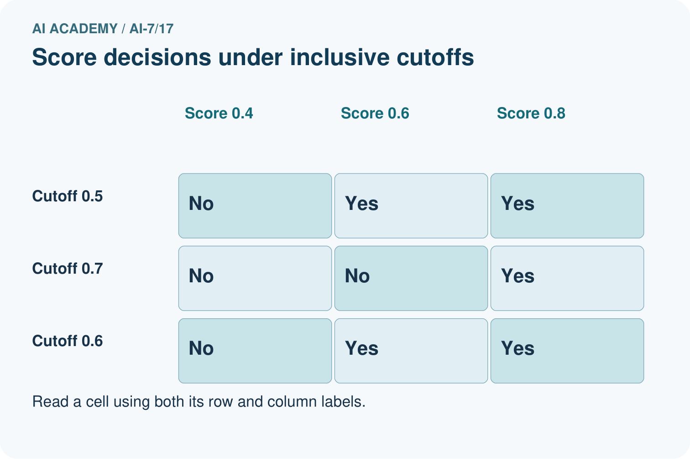
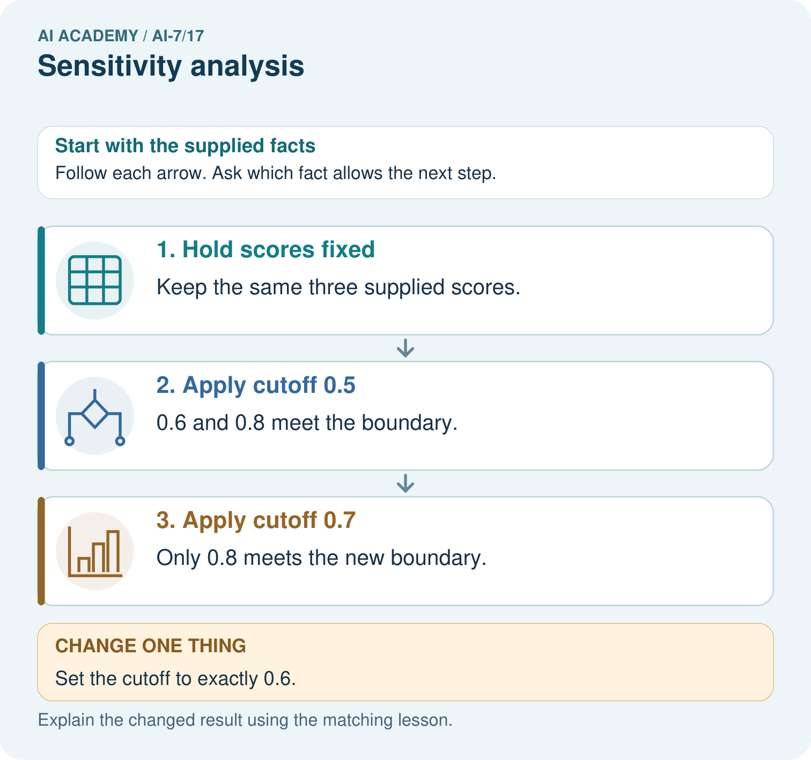

AI Academy · Level 7 · Grade 12 · Week 17 · Student lesson
Sensitivity analysis
Learn to understand, design, build, test and explain AI systems responsibly.
Project: Reproducible AI Research Study
Before you start
Recall Ablation studies. Explain why a recorded result needs its input conditions and evidence source before it can support a claim.
Plan time to read, investigate and explain. Keep predictions separate from observations.
Student lesson · 1 of 17
Your mission
Your learning target
I can explain the mechanism and terminology of sensitivity analysis.
I can apply the stated procedure to a new case with a traceable result.
I can identify an assumption or limitation and design a revealing follow-up.
Remember before reading
Close your notes first. A rough first answer helps us choose the right starting point; it is not a score for your ability.
Without opening the old lesson, explain one key idea from Ablation studies. Give an example and a mistake that the idea helps you avoid.
Without opening the old lesson, explain one key idea from Statistical tests and assumptions. Give an example and a mistake that the idea helps you avoid.
Without opening the old lesson, explain one key idea from Sampling variability. Give an example and a mistake that the idea helps you avoid.
After trying, check the relevant lesson or ask your teacher. Change the part of your explanation that the evidence shows was wrong.
This week you will practise:
Explain the mechanism and terminology of sensitivity analysis
Apply the stated procedure to a new case with a traceable result
Identify an assumption or limitation and design a revealing follow-up
Retrieve what you already know
Recall Ablation studies. Explain why a recorded result needs its input conditions and evidence source before it can support a claim.
This week’s end goal
Explain sensitivity analysis using the records and boundaries of this fictional investigation.
Student lesson · 2 of 17
Notice the evidence
Sensitivity analysis checks whether a conclusion changes under plausible settings or analysis choices. It should not secretly select the most favourable result.
Begin by writing the question the procedure is intended to answer. Identify the information already supplied, the information it will produce and the information still missing. These are constructed classroom examples; they do not require live accounts, private records or an external service. Do not treat a plausible explanation as a measured outcome.
Student lesson · 3 of 17
See how it works
Prespecify a range and preserve all results. Distinguish robustness across settings from proof beyond the tested range. Settings affecting data roles require special caution.
Sensitivity analysis — evidence trace
Before applying the procedure, write its units, denominator or decision boundary where relevant. A partner should be able to repeat each step using the same inputs. If a required input is absent or violates the stated contract, record that condition explicitly instead of quietly replacing it with a convenient value.
Connect the picture and the explanation
Point to the input, the deciding step and the result in this week’s visual. Explain the same step in ordinary words. A picture helps when you can say what each part represents.
Student lesson · 4 of 17
Compare the cases
Compare a familiar case with a changed case
Retrieval cutoffs1, 3, 5 yield recall .4, .7, .8 and precision .9, .7, .5. Show the intermediate steps and give the conclusion with its scope.
Change one thing in the pictured case
Change: Set the cutoff to exactly 0.6.
Prediction: 0.6 and 0.8 are positive because the rule includes equality.
Reason: The declared at-least boundary includes the threshold value.
Student lesson · 5 of 17
Words that unlock the idea
| Word | Meaning |
|---|---|
| Sensitivity analysis | Checking outcomes across declared plausible choices |
| Robustness range | The conditions over which a conclusion is examined |
| Post-hoc selection | Choosing a procedure after seeing its scores |
Student lesson · 6 of 17
Follow a worked example
Retrieval cutoffs1, 3, 5 yield recall .4, .7, .8 and precision .9, .7, .5.
Higher cutoff increases recall here while precision decreases. No universally best cutoff follows without a task-specific criterion.
Compare the intermediate evidence with the final statement. Explain why each number or decision follows from the stated inputs. The conclusion belongs to this scenario and procedure; changing the inputs, evaluation population or authority can change what it establishes. Retain the raw record so a later revision can be compared honestly.
Learn from the worked case
Cover the result before checking it. Say what is given, choose the procedure, and follow one step at a time. Then uncover the result and explain your first mismatch. Ask why a step is allowed, not only what number it produces.
A pictorial worked case: Sensitivity analysis
A decision sensitive to the cutoff. A toy score rule predicts positive when score is at least the chosen cutoff.
The facts we will use
Scores are 0.4,0.6,0.8. Cutoff 0.5 marks the last two positive; cutoff 0.7 marks only 0.8 positive.


Read the picture one step at a time
Why this result follows
Sensitivity analysis checks how conclusions change under plausible choices. Changing a cutoff changes the decision rule, not the recorded scores or their accuracy.
What this example does not establish
Without reference labels, these counts do not identify the best cutoff or establish correctness.
Read the labelled picture: Classify 0.4, 0.6 and 0.8 at cutoffs 0.5, 0.7 and exactly 0.6. Which equality rule decides the boundary, and can these unlabelled scores identify the best cutoff?
Change one thing: Set the cutoff to exactly 0.6. Predict the result before checking the explanation. What remains the same?
Student lesson · 7 of 17
Find and repair a mistake
A stable tested range does not establish stability under every parameter or dataset change.
A useful check asks what would make the reasoning fail. Distinguish a failure to execute the declared procedure from a weakness in the procedure itself. The first may require a correction; the second requires an explicitly revised method and new evidence. Preserve unsuccessful cases so an improved result cannot hide the original problem.
Locate the earliest unsupported step
A report omits this qualification: A stable tested range does not establish stability under every parameter or dataset change. Explain how omitting it could change a reader's interpretation, and write an accurate replacement.
Student lesson · 8 of 17
Practise together
Explain the weekly mechanism in your own words. Use the worked scenario to name its input, decision rule and output.
Practise with less help: Trace the worked case
Use workbook W2 for the connected example “Sensitivity analysis”. First fill the input and rule boxes. Try the middle steps before asking for a hint. After a hint, try the next step yourself.
| Plan | Do | Check |
|---|---|---|
| What is given? Which rule or procedure applies? | Record each intermediate step. | Does the result follow? What remains unknown? |
Explain your trace to a partner. Your partner points to one step to check. Swap roles on the next case. Each person writes their own explanation.
Check your reasoning
Use the worked case for Sensitivity analysis. Proposed explanation: “The worked result establishes every future case”. Decide whether this explanation is supported. Point to the step or supplied fact that decides; explain your repair if needed.
Answer on your own before discussion. If you are unsure, say which step you need help with.
Explain the picture
Classify 0.4, 0.6 and 0.8 at cutoffs 0.5, 0.7 and exactly 0.6. Which equality rule decides the boundary, and can these unlabelled scores identify the best cutoff?
This is supported practice. Keep the separately named independent case for an attempt before feedback.
Student lesson · 9 of 17
Run the investigation
Predict, investigate and preserve the evidence
Retrieval cutoffs1, 3, 5 yield recall .4, .7, .8 and precision .9, .7, .5. Show the intermediate steps and give the conclusion with its scope.
| Record | Your evidence |
|---|---|
| Given input and fixed rule | |
| Prediction before checking | |
| Actual result, or “not run” | |
| First mismatch and one explanation | |
| Boundary or missing input and expected response |
On paper, trace the supplied procedure. If code is provided, predict before running it in a local practice file. Never write an expected answer as though it were an observed run.
Plan → try → check
Before trying: what do I expect, and why? While trying: which step could first go wrong? Afterwards: what did I actually observe, and what should change? Keep “not run” if you only traced the procedure.
Student lesson · 10 of 17
Build your understanding
Explain → apply → challenge
Explain the weekly mechanism in your own words. Use the worked scenario to name its input, decision rule and output.
A report omits this qualification: A stable tested range does not establish stability under every parameter or dataset change. Explain how omitting it could change a reader's interpretation, and write an accurate replacement.
For the worked scenario, propose one additional case that could reveal a failure, describe its expected outcome before running it, and explain what would need to remain fixed for a fair comparison. Do not reuse W4 as a new final test after receiving feedback.
Student lesson · 11 of 17
Connect your project
Add a labelled sensitivity analysis evidence sheet to Reproducible AI Research Study. Show how you can explain the mechanism and terminology of sensitivity analysis. Use the supplied fictional case and keep its inputs, intermediate steps, calculation or prediction, and limitation. Connect this record to last week’s record; a matching answer without a trace is insufficient.
| Project evidence | Record |
|---|---|
| Component and version | |
| Inputs permitted at prediction time | |
| Trace and comparison with earlier work | |
| Failure, limit and human review |
Evidence for your project
For the Reproducible AI Research Study, retain an annotated worked trace and the changed-case reasoning. Connect the claim to its records, units and assumptions so another investigator can challenge or reproduce it.
Student lesson · 12 of 17
Show what you know
Complete the supported workbook tasks before attempting W4 independently. Record any hints or help used. After feedback, use the teacher's fresh retry rather than copying the earlier answer. For a project, select a relevant new case, predict the outcome from the declared rule and preserve the result alongside any revision.
For the worked scenario, propose one additional case that could reveal a failure, describe its expected outcome before running it, and explain what would need to remain fixed for a fair comparison. Do not reuse W4 as a new final test after receiving feedback.
Student lesson · 13 of 17
Study a complete case
Complete evidence record
Sensitivity analysis — evidence trace
Follow the input through the stated procedure to its result. Cover the result first, predict it, then explain every intermediate step. The text/table accompanies the figure so the example can be read without colour.
Student lesson · 14 of 17
Try a new case independently
Independent case: Apply a new case independently
Thresholds .4, .5, .6 give passes8, 9, 7 out of10. Report range and a selection limit.
Attempt this case before feedback. Record any help. Earlier examples below are further practice; a case already practised with feedback cannot establish fresh transfer.
Attempt this without hints
Thresholds .4, .5, .6 give passes8, 9, 7 out of10. Report range and a selection limit.
Record support used: none, hint or teacher explanation. After feedback, a different case is needed to demonstrate independence.
Use feedback to improve
Attempt the independent case before hints. Record whether you worked alone, used a hint or followed a model. After feedback, fix the first unsupported step and explain why it changed. A later check uses a changed case, not a copied answer.
Student lesson · 15 of 17
Your lesson route
Start with this question: A decision sensitive to the cutoff. A toy score rule predicts positive when score is at least the chosen cutoff.
| By the end, I can | How I will show it |
|---|---|
| Explain the mechanism and terminology of sensitivity analysis | Explain the deciding step, show a trace or test, and state one limit. |
| Apply the stated procedure to a new case with a traceable result | Explain the deciding step, show a trace or test, and state one limit. |
| Identify an assumption or limitation and design a revealing follow-up | Explain the deciding step, show a trace or test, and state one limit. |
Remember → watch and explain → try with help → investigate → try independently → keep project evidence. Your teacher may spread this lesson across several classes.
Keep your first prediction. Compare it with what the evidence shows and explain any change.
Student lesson · 16 of 17
Finish and return
Close your notes. Explain this goal in your own words: Explain the mechanism and terminology of sensitivity analysis
If you are unsure, return to the worked picture and explain one arrow. If you are ready, change an input or assumption and justify your prediction.
Save your workbook evidence. At the next review, try a different case before opening your old answer.
Student lesson · 17 of 17
Supported practice, repair and portfolio
Use this supported practice once, in the browser or on paper. Keep the reserved independent assessment for a separate first attempt before teacher feedback.
A decision sensitive to the cutoff. A toy score rule predicts positive when score is at least the chosen cutoff.
Practice 1: explain the deciding evidence
Which labelled step matches this detail? Only 0.8 meets the new boundary.
1. Hold scores fixed
2. Apply cutoff 0.7
3. Apply cutoff 0.5
Hint if needed: Read the steps in the pictorial case. Match the supplied detail to the stage that performs or records it.
After your attempt, compare with the supported explanation: Apply cutoff 0.7 Only 0.8 meets the new boundary. Sensitivity analysis checks how conclusions change under plausible choices. Changing a cutoff changes the decision rule, not the recorded scores or their accuracy.
Practice 2: explain the deciding evidence
Changed-case practice: Set the cutoff to exactly 0.6. Which conclusion is supported by the supplied facts?
1. We can decide the result without examining the changed input or the procedure.
2. This one example guarantees correct results for every future input.
3. 0.6 and 0.8 are positive because the rule includes equality.
Hint if needed: Use the changed condition and the deciding step in the pictorial trace. The answer must say what follows from those facts.
After your attempt, compare with the supported explanation: 0.6 and 0.8 are positive because the rule includes equality. The declared at-least boundary includes the threshold value.
Repair a missing building block
Review Ablation studies (ai-7/16). Goal: Explain the mechanism and terminology of ablation studies. Short practice: Calculate the filter ablation’s two rates and count change. Which single component is altered, and why does also changing the model prevent isolating the filter?. Return to this week and explain what you changed.
Review Statistical tests and assumptions (ai-7/14). Goal: Explain the mechanism and terminology of statistical tests and assumptions. Short practice: Calculate each paired difference and the observed sum. Count null arrangements with absolute sum at least four, compute p, and explain the decision at threshold 0.05.. Return to this week and explain what you changed.
Review Sampling variability (ai-7/11). Goal: Explain the mechanism and terminology of sampling variability. Short practice: Calculate the two four-case rates and their difference. Explain how changed included cases can affect a fixed model, and why identical deterministic records should not differ on a rerun.. Return to this week and explain what you changed.
Keep your completed work
Use Download completed work in the hosted lesson to export your answers, reflections, practice feedback and code-run evidence. Open the HTML copy to read or print it. Drafts stay in this browser when storage is available; clear drafts on a shared device.